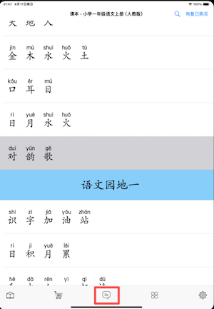

【简体中文】
感谢您使用【汉字大师】APP，您可以通过以下途径获取支持：
1. 微信群沟通
在APP设置页面，找到"加入微信群"，点击跳转到新页面，扫描群二维码后加入。
2. APP内直接反馈意见
在APP的主页面（即进入APP后的第一个页面，显示当前学习课文的单元、课程等信息），在下方工具栏，点击中间的按钮，跳转到意见反馈页面，直接输入意见。
我们会对意见，做出响应。

3. 邮件沟通
发送意见到邮箱：3182721176@qq.com
【繁體中文】
感謝您使用【漢字大師】APP，您可以通過以下途徑獲取支援：
1. 微信群溝通
在APP設定頁面，找到「加入微信群」，點擊後跳轉至新頁面，掃描群組二維碼即可加入。
2. APP内直接反饋意見
在APP主頁面（即進入APP後的首頁，顯示當前學習課文的單元、課程等資訊），點擊下方工具欄中間的按鈕，跳轉至意見回饋頁面，直接輸入意見。
我們會對意見做出回應。
3. 郵件溝通
傳送意見至信箱：3182721176@qq.com
【English】
Thank you for using the 【EZ Chinese】 APP. You can obtain support through the following channels:
1. WeChat Group Communication
On the APP settings page, find "Join WeChat Group," then click to navigate to a new page and (Use WeChat app) scan the group QR code to join.
2. Direct Feedback in the APP
On the APP homepage (the first page displayed upon entering the APP, showing the current learning unit, course info, etc.), click the middle button in the bottom toolbar to jump to the feedback page. Enter your suggestions directly—we will respond to all feedback.
3. Email Communication
Send feedback to: 3182721176@qq.com
【日本語】
【漢字大師】アプリをご利用いただきありがとうございます。サポートは以下の方法で受けられます：
1. 微信群でのコミュニケーション
アプリの設定ページで「微信群に参加」を探し、タップして新しいページに移動し、グループQRコードをスキャンして参加します。
2. アプリ内での直接フィードバック
アプリのホーム画面（アプリ起動後の最初のページで、現在学習中の単元やコース情報が表示される画面）で、下部ツールバーの中央ボタンをタップし、フィードバックページに移動して直接意見を入力します。
ご意見には対応いたします。
3. メールでの連絡
意見をメールで送信：3182721176@qq.com